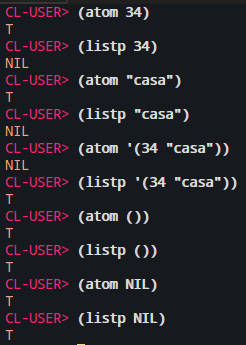
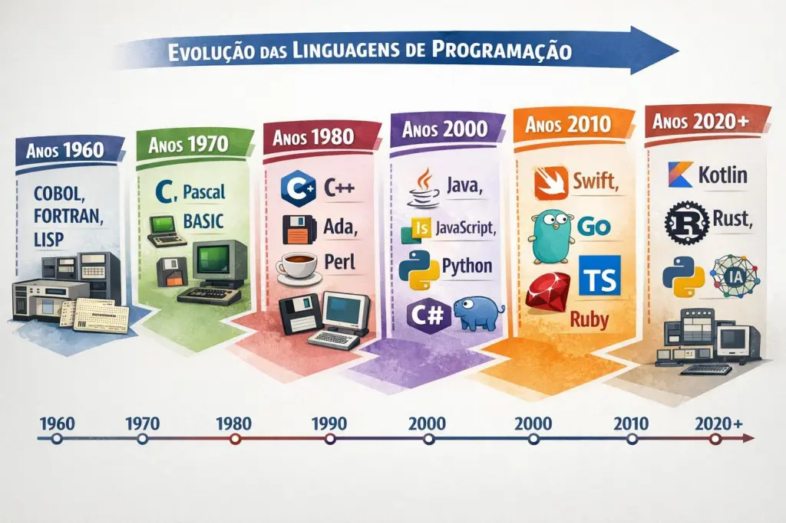

Lisp é uma família de linguagens de programação criadas por John McCarthy em 1958, projetada principalmente para o processamento de dados simbólicos e construção de funções matemáticas.
Durante os anos de 1970 e 1980, se tornou a principal linguagem de programação das inteligências artificiais da época.
As primeiras ideia para a linguagem foram desenvolvidas por McCarthy em 1956, durante um projeto de pesquisa sobre inteligência artificial.
O primeiro uso da linguagem aconteceu em 1958.
A famila da linguagem lisp surgiu da ideia de desenvolver uma linguagem algébrica para processamento de listas para trabalho em IA.
Esforços para implimentar seus primeiros dialetos foram empreendidos em computadores das séries IBM e PDP.
O dialeto principal entre 1960 e 1965 foi o Lisp 1.5.

Lisp passou por um ressurgimento após os anos 2000.
com as implementações de Common Lisp, Scheme, Emacs Lisp, Clojure, e Racket, e inclui o desenvolvimento de novas bibliotecas e aplicativos portáteis.
A linguagem lisp foi pioneira nas seguintes caracteristicas:
